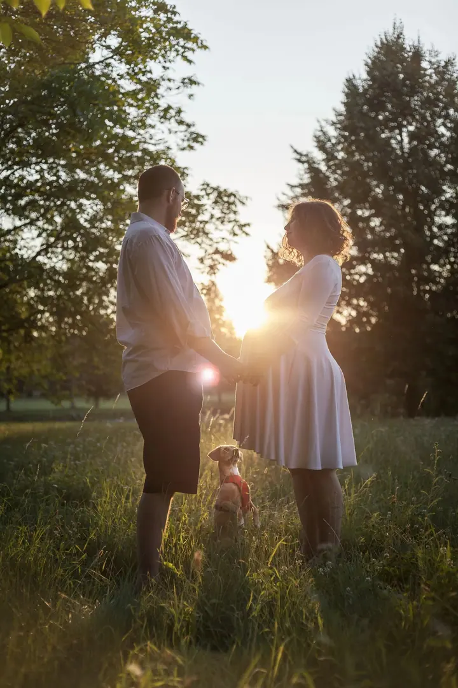

Pohlednice č. 1
Svatby
Svatby jsou pro mě srdcová záležitost. Snažím se být nenápadná, abych zachytila emoce přesně tak, jak je ten den prožíváte.
Pro: vás · Od: Adéla
Svatební a rodinná fotografka — Praha
Ahoj, jsem Adéla. Fotím lidi, kteří k sobě patří.
Napište miJsem máma ↙
Nenápadně, s citem a s úsměvem


O mně
Jsem fotografka, jsem máma a jsem akční člověk. Lidi mě baví a jejich úsměvy ještě víc, proto se točí kolem nich všechno, co fotím: svatby, páry, těhotenství, rodiny i miminka.
Svatby jsou pro mě srdcová záležitost. Snažím se být nenápadná, nechávám věci plynout a chytám emoce ve chvíli, kdy se opravdu dějí. U párového focení mi jde hlavně o přirozenost, takže nemusíte umět pózovat.
Často s sebou tahám analogový a polaroidový fotoaparát, a tak ode mě rovnou na místě dostanete malou pozornost. Jsem z Prahy, ale za vámi ráda přijedu i jinam.
Co fotím
Pohlednice č. 1
Svatby jsou pro mě srdcová záležitost. Snažím se být nenápadná, abych zachytila emoce přesně tak, jak je ten den prožíváte.
Pro: vás · Od: Adéla
Pohlednice č. 2
U párového focení mi jde hlavně o přirozenost. Žádné strnulé pózy, jen vy dva a to, jak spolu opravdu jste.
Pro: vás · Od: Adéla
Pohlednice č. 3
Klidné focení venku, ve světle, které je vám příjemné. Památka na čas, kdy se na miminko teprve těšíte.
Pro: vás · Od: Adéla
Portfolio
fotografie jsou ilustrační
Jak to probíhá
Pošlete mi e-mail s termínem a tím, co byste rádi nafotili. Ozvu se vám a domluvíme se na detailech.
Probereme, jak si den nebo focení představujete, kde bude a co je pro vás důležité.
Jsem nenápadně u toho a nechávám prostor vašim emocím. Když se to hodí, vytáhnu i polaroid a malou pozornost dostanete hned.
Vybrané a upravené fotky vám předám v online galerii, odkud si je snadno stáhnete a pošlete dál.
Otázky
Ano. Jsem z Prahy, ale dojet někam jinam není problém. Napište mi, kde se focení nebo svatba koná.
Vůbec ne. U párového i rodinného focení mi jde hlavně o přirozenost, takže vás nebudu nutit do strnulých póz.
Často s sebou nosím analogový a polaroidový fotoaparát. Pár fotek tak od mě dostanete hned na místě, do ruky.
Cena záleží na typu a rozsahu focení. Napište mi, co plánujete, a pošlu vám nabídku na míru.
Napište mi
· Praha
Adéla